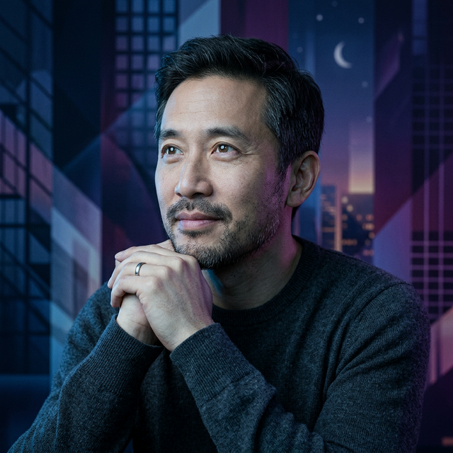

Alex Zhu
Architect of Semi-Structured Worlds
编辑：涉 Alex Zhu 个人半公开分享，有限浏览。
不要试图"理解"他。这种人最警惕的就是被理解、被归类、被定义。
一个词概括：半结构化
同时存在刚性约束和自由空间，两者互相定义、互相激发。
城市的“基础设施”：道路网格、水电系统、法律法规、功能分区。TikTok 的 15 秒限制与音乐模板。
城市的“市民生活”：自发产生的文化、商业、艺术。用户在模板之上的个性化演绎。
人生地图
🌱 形成期 (1979-2010) - 设计世界观
🔮 预言期 (2012-2014) - 验证教育设想
🚀 巅峰期 (2015-2020) - 建社会级社区
🧘 沉思期 (2021-2025)
从教育到娱乐：30 天重生
Alex Zhu 和阳陆育（Luyu Yang）从 China Rock Capital 融了 $250,000，花了 6 个月做了一款教育短视频
App：Cicada。
目标是用 3-5 分钟的视频让用户学习不同学科。但视频制作成本太高，目标用户群（青少年）根本不买账。
"It was doomed to be a failure. The day we released this application to the market, we
realized it was never going to take off."
从旧金山到 Mountain View 的火车上，Zhu 注意到一群青少年一边听音乐一边对口型（lip-syncing），另一群在用 emoji 装饰自拍。
灵光一闪：能不能把音乐和短视频合成一个社交 App？
用剩余 8% 的资金，团队在 30 天内重建了产品。2014 年 7 月，Musical.ly 上线——允许用户创建 15
秒的音乐对口型视频。
📈 GROWTH_METRICS
Spike.TV 的 "Lip Sync Battle" 节目意外助推——搜索 "lip-sync" 时 Musical.ly 总第一个出现。
数据主权与政治风暴
TikTok 成为全球最快增长的社交媒体后，面临美国政府的严厉审查。Zhu 被迫走到聚光灯下回应指控：
- • TikTok 不审查令中国不悦的视频
- • 不与中国甚至母公司 ByteDance 共享用户数据
- • 所有全球用户数据存储在弗吉尼亚，备份在新加坡
- • TikTok 的数据仅用于 TikTok，不改善 ByteDance 的 AI
当被问到：如果中国主席要求他删除 TikTok 上的视频或访问用户数据，他会怎么做？
"I would turn him down."
— barely a moment's thought
"Today, we are lucky because users perceive TikTok as a platform for memes, for lip-syncing, for dancing, for fashion, for animals — but not so much for political discussion."
LinkedIn 职位地点：Mars · 自称 "designtrepreneur"
- • 世界是半结构化的共生体
- • 中央集权 + 去中心化必须并存
- • 人是为了表达和被看见而留下来
- • 结构决定增长，而非运营
- • 语言是设计的终极类比
- • 运营救不活社区，只有结构能
- • 模仿是通往表达的捷径
- • 竞争力：复制速度 > 创作速度
- • 娱乐先于教育，动机先于内容
- • 算法是阶层系统、法律与宪法
- • TikTok 是数字国家，而非视频产品
1. 城市创造剧场
“组成的并不是东西，而是空间面积与历史事件的关系。”
定义使命 → 设计叙事 → 设计 UI
2. 半结构化世界
Hard 与 Soft 的共生。太少自由带来停滞，太多自由带来混乱。
3 & 4. 内外适应性
外部平衡（环境）与内部平衡（要素关联）。形式与功能应是一体。
5. 生态与基因
从机器类比转向有机体与市场。算法即“看不见的手”。
6. 语言模型
有限语言表达不确定的世界。UI 控件如汉字原子，数量应保持稳定。
0.5 To Design or Not?
我们是否在为复杂性做贡献？把创造力留给上帝。设计前先问：需要设计吗？
设计，是一个需要仔细询问的问题
抛向所有设计师的终极命题：
- 设计师如何影响世界和人类生活？
- 我们的工作真的能创造价值吗？还是在错误的事情上空耗金钱与精力？
- 设计有时是否成为了“智力的过剩”或“创造力的炫耀”？
- 我们是在解决复杂性，还是在为复杂性做贡献，甚至成为复杂性的一部分？
- To design, or not design?
OPTIMIZABLE 我们可以改进的地方
- 系统思维（System Thinking）：利用系统性闭环避免产生“负价值”。
- 社会级 SOA：将 Service Oriented Architecture 概念引入非软件领域，提高内外互操作性，减少冲突。
- 前置审问：在动手前，强迫自己回答“设计，还是不设计？”
- 转移消耗：如果只是智力过剩，去别的地方消耗，不要祸害产品。
- 敬畏自然：把一些创造力留给佛陀/自然/自然法则，停止过度干预。
HARD_LIMITS 我们无法改进的地方
- 自我利益：公司本质上是通过“解决”问题的方案来生存的，存在动机偏差。
- 无尽需求：人类对欲望和体验的需求是永无止境的。
- 现实危机：全球变暖、资源枯竭等真实存在且紧迫的硬性问题。
性格图谱：矛盾而统一的系统设计师
浪漫的系统架构师
用极度理性的系统思维实现极度浪漫的理想。他设计的不是工具，而是让生命“参与、表达、成长”的数字剧场。
清醒的马基雅维利者
直面人性的弱点（嫉妒、渴望被看见），不试图改善它们，而是将其作为系统设计的杠杆，顺着弱点建结构。
本质定义者
在构建前必先从哲学层面定义本质。将 TikTok 定义为“数字国家”，算法定义为“宪法”，内容复制定义为“文化繁殖”。
孤独的实验室心态
他不是表演者，而是“发明结构”的人。在实验室里研究社会动力学，然后消失在自己创造的系统背后。
治理模式：强规则 + 小干预
半结构化不是“中庸”，而是“强但极简的政府”。对应现实世界中的新加坡模式或早期的特区逻辑。
上帝之手：物理定律的制定者
对应：算法分发权、平台底层协议、核心交互范式。
逻辑：规则必须极其刚性、绝对（算法面前人人平等），以提供确定性、秩序和效率。类似于“宪法”。
市民生活：不可预测的演化
对应：挑战赛玩法、文化趋势、自发社群、个性化表达。
逻辑：政府（平台）退后一步，允许在定律之上产生混乱、竞争和惊喜。类似于“市场自由”。
治理比喻：新加坡 vs 传统大政府
不是大政府：大政府什么都管，导致过度结构化、死板且缺乏生命力。
是“强且极简”的新加坡模式：政府管得极少（只管秩序和规则），但在管的地方极其铁腕。因为规则极硬（Hard足够刚），所以交易和创作才能极活（Soft足够自由）。
世界观：高度相对主义
“真实是被诠释的，而非客观存在的。”
核心线索：
1. 唯一解：系统推导出的荒谬解，在参与者眼中是理所当然的唯一。
2. 比喻：想象决定了对世界的理解和行动。
3. 梦的嵌套：模糊现实与虚幻的边界，怀疑“客观现实”。
人生观：智性的忧郁
• 生命是孤独的：被数据和记忆定义的短暂过程。
• Hungry For Data：人是生物形态的大模型，本能渴望数据确认存在。
• 嗅觉记录仪：无法被保存的信息流逝，反映声明有限的惆怅。
特征：极强的抽象能力，诗人灵魂、建筑师大脑、经济学家手术刀。
核心框架
权力向个人转移。原子化、解耦与网络连接增强。
| 01 | 学习者驱动的教育 |
| 02 | 开放、随时可存取的资源 |
| 03 | 极个性化的自适应学习 |
| 04 | 社会化重新定义“课堂” |
| 05 | 普遍、无处不在的接入 |
未来观察
教育的失败不是内容，而是动机。人性是弱的，必须顺着弱点建结构。
| 06 | 全功能性的教育系统 |
| 07 | 重新定义教师角色（激情引导者） |
| 08 | 分散、灵活的教育政策 |
| 09 | 产业从业人员角色的剧变 |
| 10 | 重新定义教育成果（技能>学位） |
...今天的城市可以说是从欧式租界建筑的内核上长出来的。不同时代建成的建叠在一起。仿佛从一个地质剖面上看到的不同地层年代遗迹的沉积... 在一百年以后，它的墙壁上面也会攀爬着爬山虎，那时它将是美的。
对视觉有照相机，对听觉有留声机。但对嗅觉，尚不存在类似的记录仪...个体生命一旦结束，这些嗅觉的数据也将随着这肉身的记录仪一起被抹去。
在人类的诗歌中反复出现“月亮”，极少出现“微信”、“二维码”。这似乎也是人类大脑在执行生成任务上的某种 Token Bias。或者说，我们被月亮击穿了。
名字叫“春邮”，英文名却是 SpringEmail。我这个年纪想到的是手写信件。而年轻人联想到的是邮件，未来的孩子可能只联想到一条微信语音...
一个复杂的方程式，在经过无数个中间步骤后，虽然每一步都似乎严密，最终却推导出荒谬的解。只有那些参与了中间过程的人，才能理所当然地把这个解视为合理，甚至唯一。
“时间是物质，也是一场忧伤的幻觉。”
人，就像生物形态的大模型，本能地有着对 data 的渴望——不断 CT 自己，RL 自己，用 data 塑造自己大脑的参数。无论优质的还是低质的 data，只要带来正反馈，便支撑我们在模糊的自身存在中获得一个短暂的小确幸。
今天凌晨我梦见了女儿——那个从没有机会在这个世界上生活过的女儿。我终于第一次看清了她的脸。她很瘦小，看我的目光既亲切又清冷，仿佛责怪了我很久终于又原谅了。我脑中闪过："你脸上闪烁的不是忧愁，而是一场核爆后的大火映射的光辉。"
与其说人活在世界中，不如说人活在他对世界的想象中。
更正确的比喻是：他自己就是那轮阴晴圆缺的月亮，正用清冷的光辉照耀夜间的山谷。而他自己也同时是在山谷中行走的那只黑色野兽，垫着脚正犹疑不定地经过一束洁白的花朵。
没有谁能真正拥有月亮，除非你驾驶着飞船降落在它光秃秃的环形山，用绣满家微的旗帜对它宣示主权，再用黑色塑料袋裹紧它的每一寸表面。
而每个人又都曾拥有过月亮，当你在田野中结束劳作仰头张望的时刻，它抖动金色的羽毛，从你的头顶振翅起飞。
困扰他的不是幻想，甚至不是失败，而只是情欲——试图持有的情欲。精神的情欲撕扯过他，让他无法自由地、不患得患失地拥有一切。
当然这个故事也可以反过来说——与恩底弥翁相遇的并不是塞勒涅，而是
HalfmoonBay 凌晨四点钟的月亮。
鬼 在上游放了一盏纸灯笼 / 被潮汐推着 缓缓漂过宝石蓝的天空
那些沉默的人们 / 在屋檐下站成静止的姿态 / 连晚风也冻结了 / 在他们的睫毛下凝成露水 /
映出无数轮更细小的月亮
有一只塑料袋 被风吹着 / 从建国西路跑到永嘉路 / 再没什么比贴着各种型号的大腿飞行更自由的了 / 但它觉得虚无 / 生命没有重量 / 没有重量就感觉不到存在
直到傍晚
一位认真的李姓保洁员一脚踩住了它 / 往里面装了一块石头
塑料袋 从此获得了重量 / 但它看不到长乐路和巨鹿路的夜色了
平行宇宙其实是相交的。门口有礼貌的保安、多送你油条的大娘——都各自是某一个平行宇宙的你自己。
这世界就是你一个人的把戏。你无所不在，孤独且永生。
旅行在背仔角结束 / 面朝大海的华侨墓 / 身后是各位兄弟 / 告别后独自上路
此刻的车窗外夜幕低垂晚风如水 / 静默的山丘和疲倦的鸟儿都不曾回头 /
陌生的城市里的一个我匆匆路过 / 疲惫的旅客温暖于万家灯火
转头看见从杭州 开往深圳的绿皮车 / 那晚你沉沉的睡去 / 梦不到我忧愁的面色 / 昏暗中唇齿 酝酿着 /
黎明的告别该如何说
"没有谁拥有月亮，除非你占领它光秃的岩石表面。
而每个人又都拥有过月亮，就在你从田野间仰头张望的瞬间。"
FINAL_RECORD_SYNC: 2026.02.04